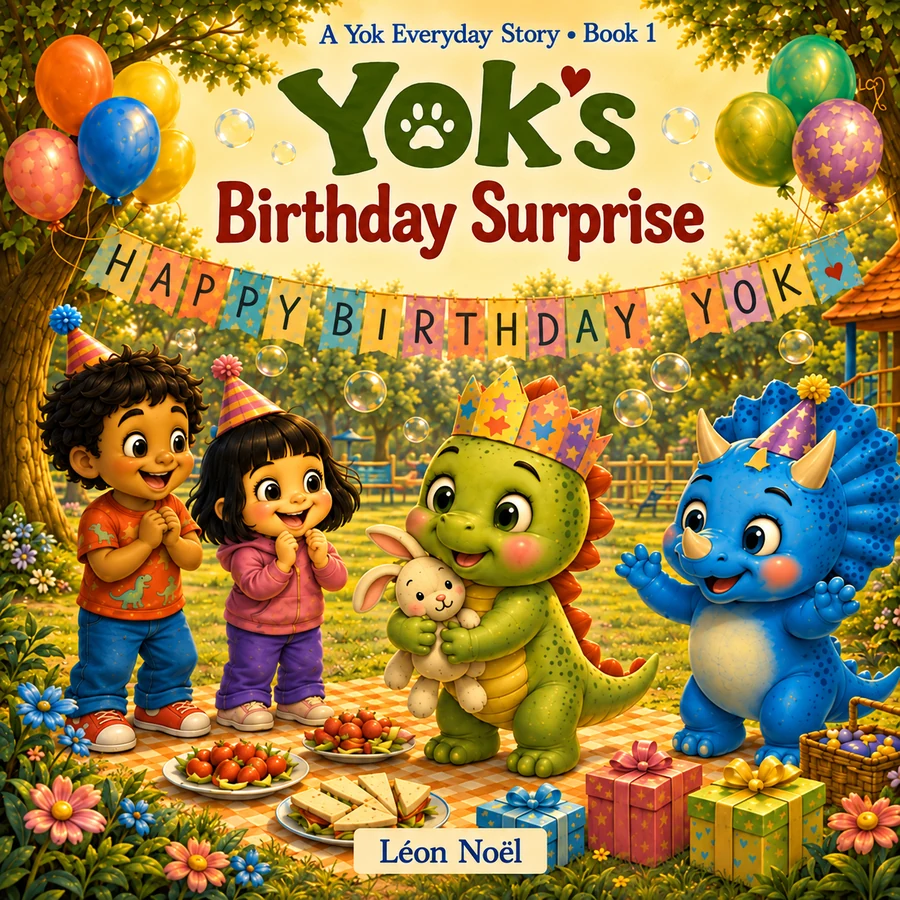
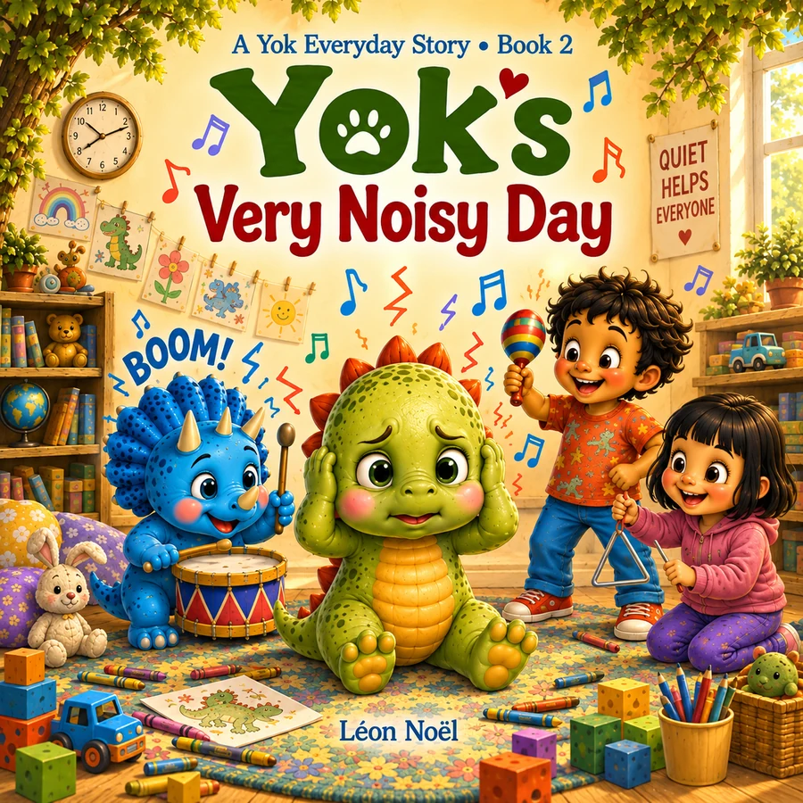
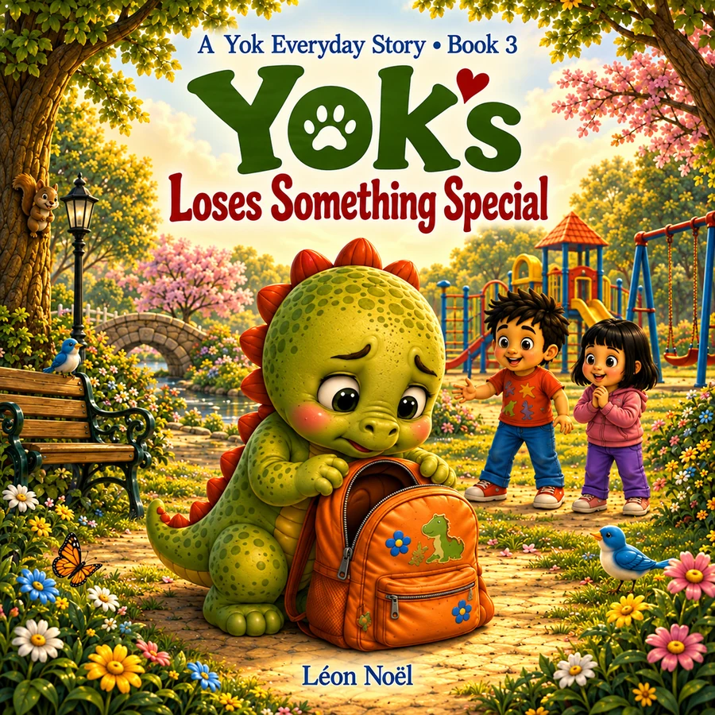
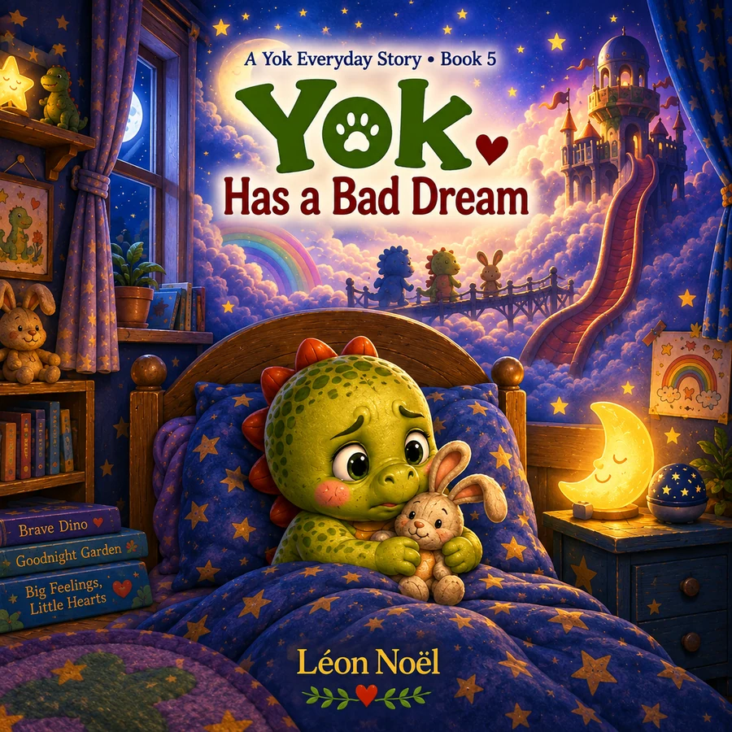
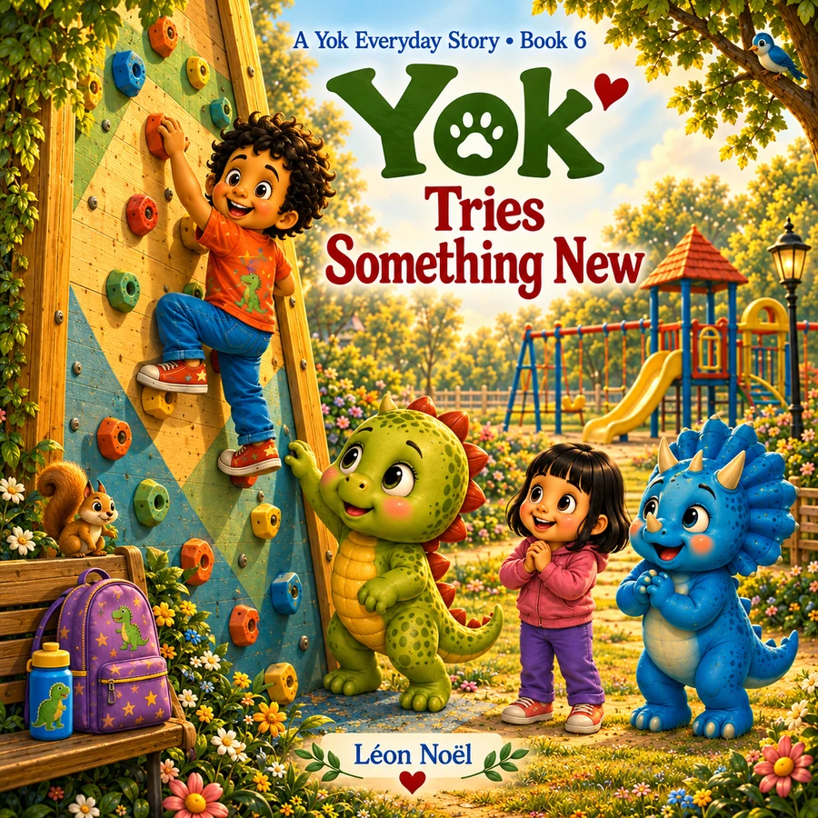
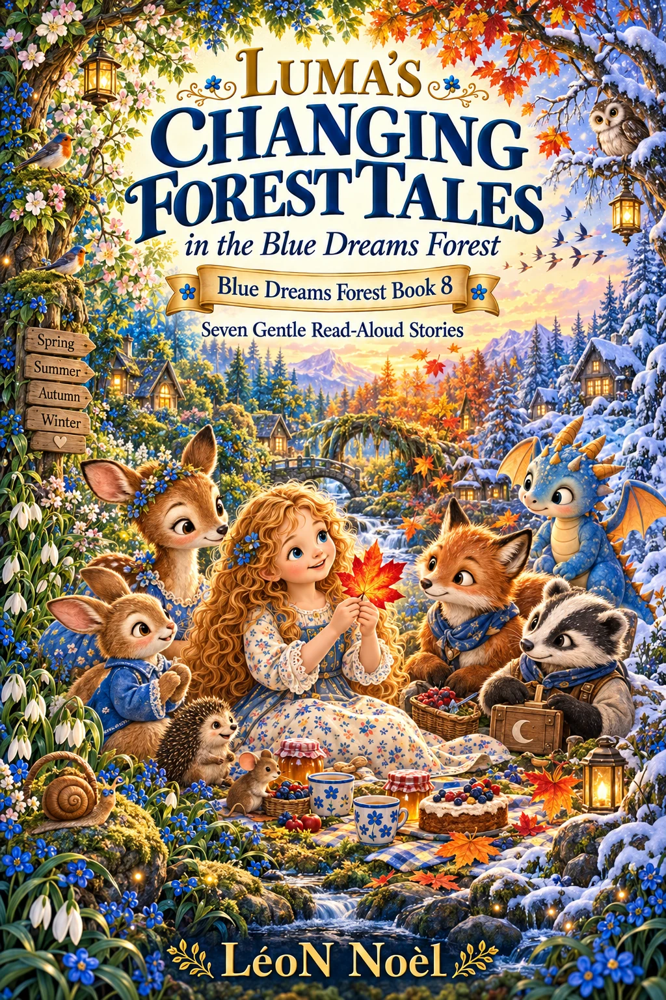

01
01The complete bookshelf
Find the right story for this moment.
Browse every collection by age, theme, or reading occasion.
A Yok Story
01 02
02 03
03 04
04 05
05 06
06 07
07 08
08 09
09 10
10Bilingual Yok
 01
01 02
02 03
03 04
04 05
05 06
06Yok First Experiences · Upcoming
Yok First Experiences
Yok First Experiences helps young children approach unfamiliar situations one small step at a time. Alongside Yok, readers experience visits to the dentist and doctor, a first sleepover, a trip away from home, a haircut, and meeting a babysitter.
With gentle humor, familiar emotions, and reassuring details, each story shows that feeling unsure is part of trying something new — and that new experiences can become easier when children know what to expect.
 01
01 02
02 03
03 04
04 05
05 06
06Yok Everyday Stories · Upcoming
Yok Everyday Stories
Yok Everyday Stories follows Yok, a curious young dinosaur, as she navigates the small but meaningful moments of everyday childhood. From birthdays and noisy days to losing something special, eating out, bad dreams, and trying something new, each story explores familiar feelings and situations with warmth, humor, and reassurance.
Designed for young children and the grown-ups who read with them, these gentle stories help make everyday challenges feel understandable, manageable, and a little less overwhelming.

01
02
0304

05
06Blue Dreams Forest
 01
01 02
02 03
03 04
04 05
05 06
06 07
07Feelings, empathy & brave steps
Luma’s Big-Heart Forest Tales
Planned November 4, 2026 · Book 7Book details →
08Seasons, change & resilience